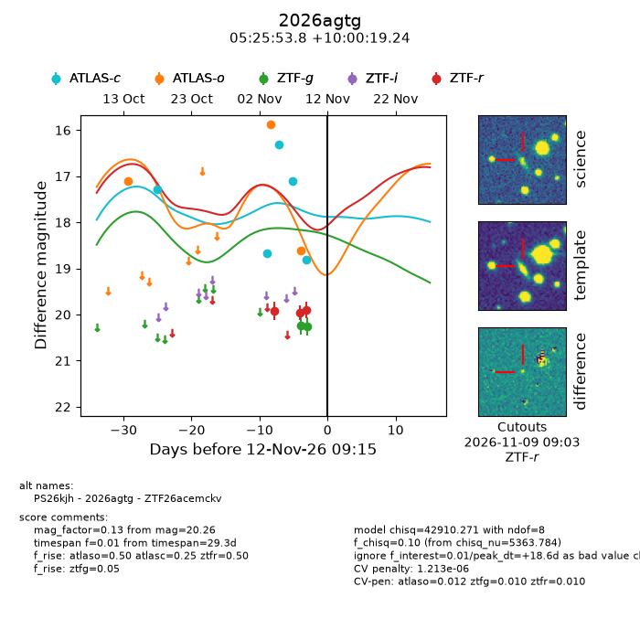
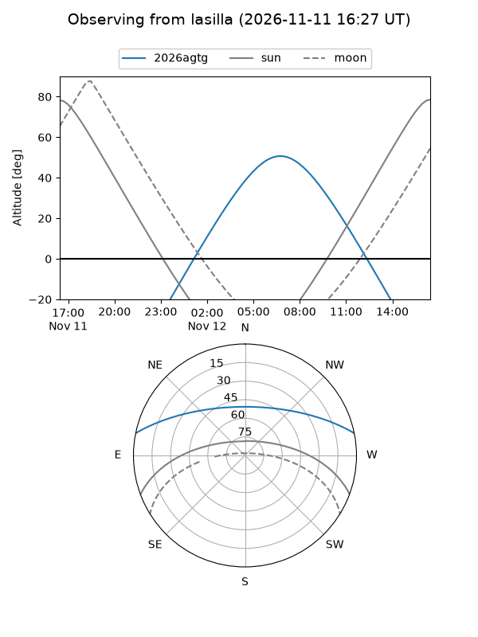
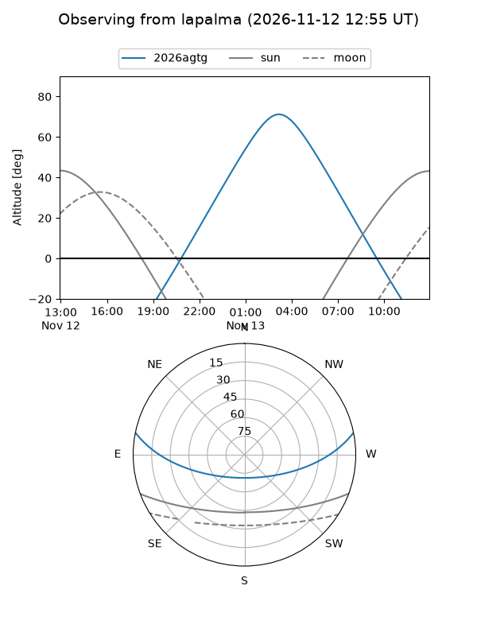
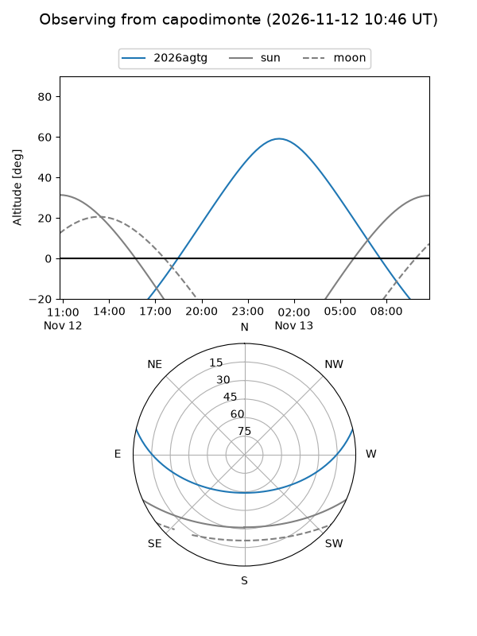
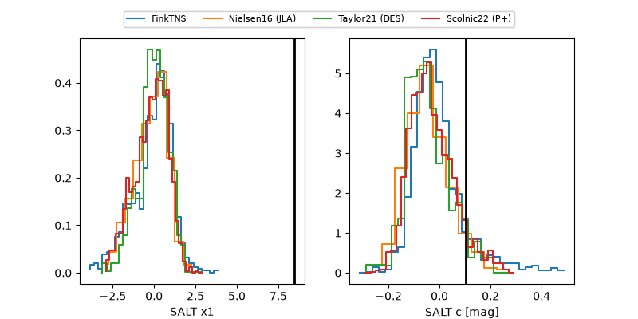

2026agtg
Target 2026agtg at 2026-11-12 09:20
Aliases and brokers:
FINK-ZTF: ztf.fink-portal.org/ZTF26acemckv
Lasair-ZTF: lasair-ztf.lsst.ac.uk/objects/ZTF26acemckv
ALeRCE-ZTF: alerce.online/object/ZTF26acemckv
YSE-PZ: ziggy.ucolick.org/yse/transient_detail/2026agtg
TNS name: wis-tns.org/object/2026agtg
Direct TNS query: direct search
alt names
ZTF26acemckv (ztf,fink_ztf)
2026agtg (tns,yse)
PS26kjh (panstarrs)
Coordinates:
equatorial (ra, dec) = 81.4741,+10.00535
equatorial (HMS+DMS) = 05:25:53.78,+10:00:19.24
galactic (l, b) = (193.7855,-13.90819)
Flags:
likely cv: !!
CV pen: 1.2131799336654717e-06
peak dt: +18.6
Photometry:
last atlasc=18.81, atlaso=18.60, ztfg=20.26, ztfr=19.91
5 atlasc, 3 atlaso, 2 ztfg, 3 ztfr detections
Lightcurve

Visibility



Additional plots
